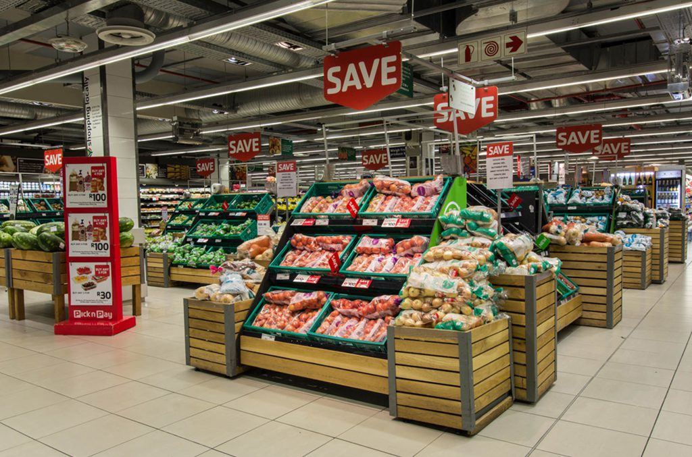
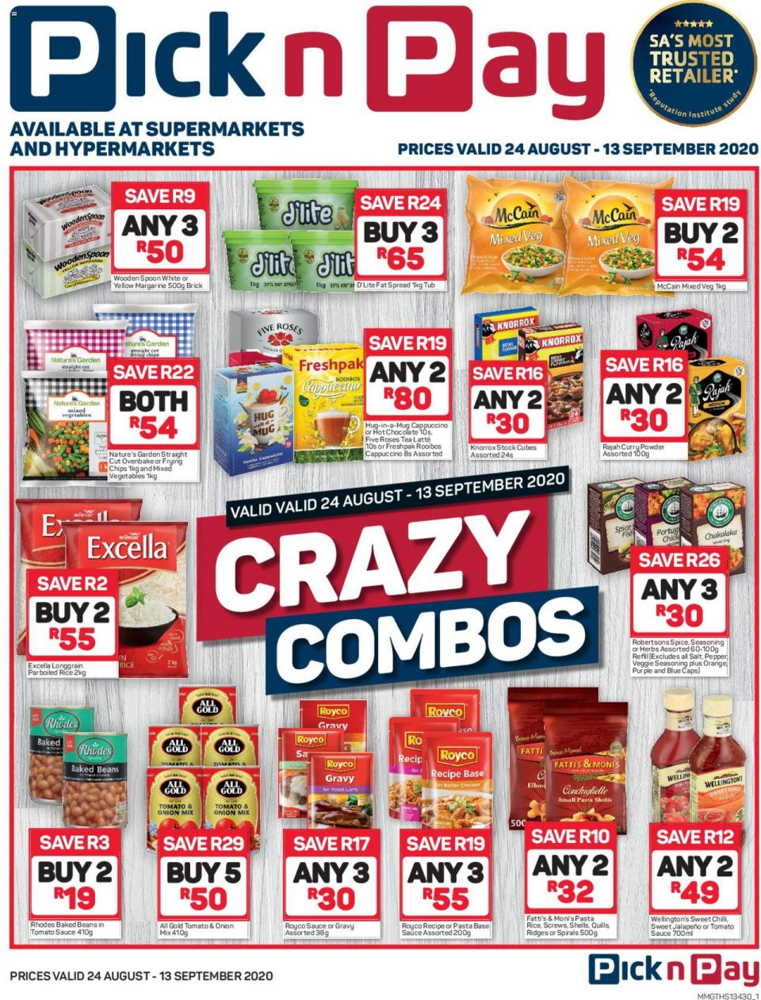
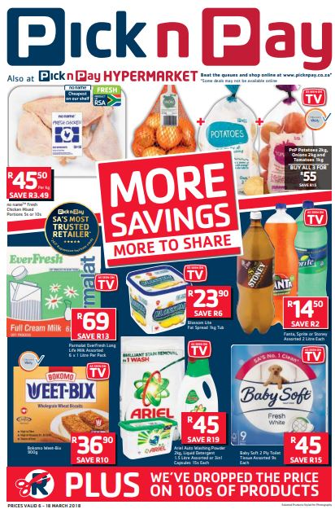
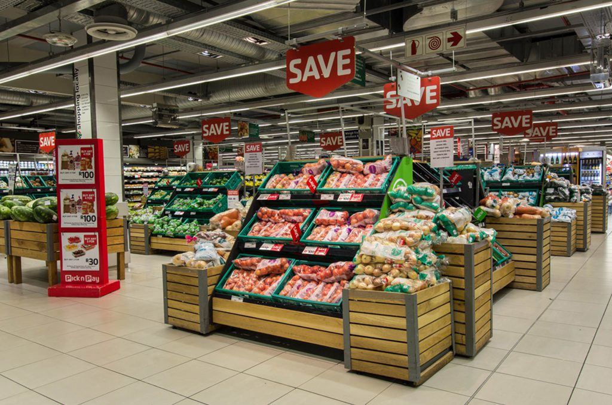
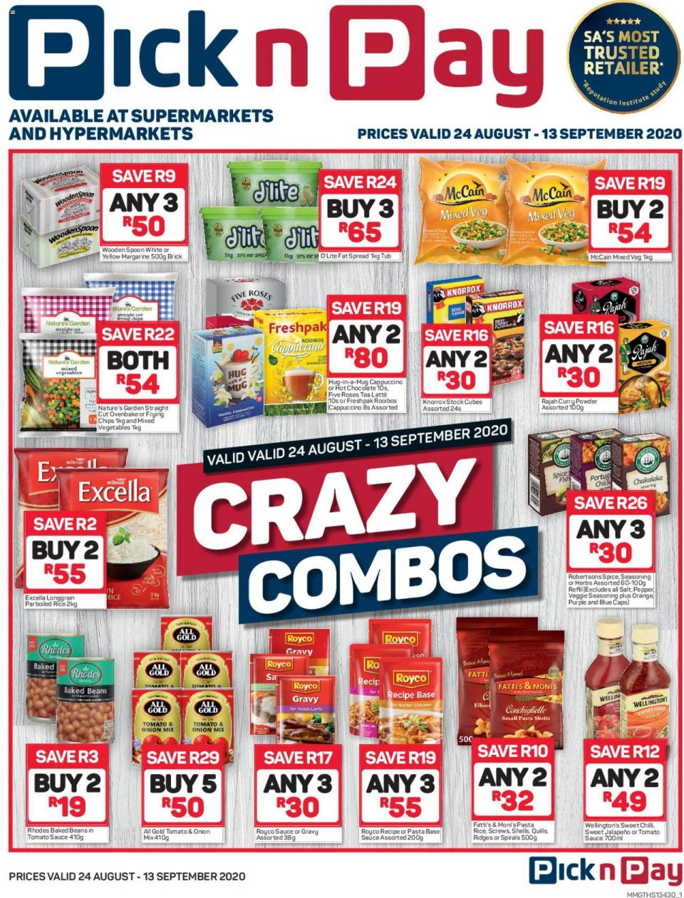
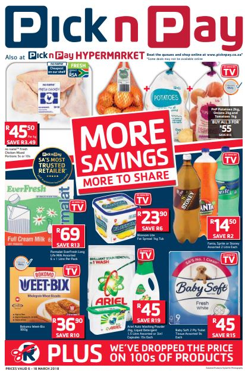

Pick n Pay is the second largest supermarket chain store in South Africa, and was established in 1967. It can also be found in other regions of southern Africa, including as Botswana, Zambia, Zimbabwe, Lesotho, Namibia, Swaziland, and had plans to open in Malawi but has yet to do so. Raymond Ackerman purchased three Pick n Pay supermarkets from Jack Goldin in Cape Town, and served as executive chairman until his retirement in 2010. His eldest son, Gareth, is the current chairman.
 




